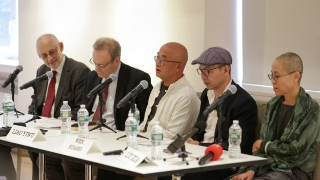
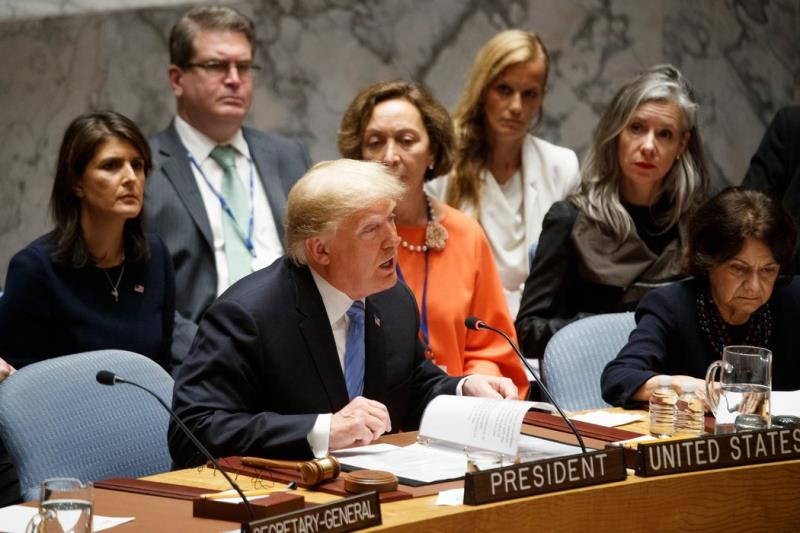

中国与梵蒂冈达成历史性协议，欲加强对基督教控制
北京——在过去两年里，据估计人数有6000万的中国基督徒已经感受到一个近来开始展露自信的政府的力量，这个政府竭力要让他们的信仰就范。
当局拆除了数百座新教教堂，拆掉了教堂尖塔上的十字架，并驱逐教众。天主教徒也遭受过当局的类似措施，但就在上周末，中国政府采取了不同的做法，达成了一项被梵蒂冈官员称为历史性突破的外交协议——这是北京方面首次正式承认教宗对中国天主教会的权威。
不过，北京通过协议达到的目标似乎与拆除教堂一样：对基督教的迅速传播有更多的控制。基督教自16世纪以来就在中国获得了永久存在。
“我们正处于一个转折点，”香港中文大学神学院院长邢福增说。“这届政府认为，过去政府过于松懈，现在想加大压力。”
根据上周六签署的协议，教宗方济各承认了北京任命的七名主教的正当性，以此换来了教宗对中国未来的主教任命上的发言权。
执政的中国共产党把与梵蒂冈的妥协视为朝着消除地下教会迈出的一步，拒绝承认中国权威的几代中国天主教徒们一直在地下教会做礼拜。教宗现在承认了由共产党控制和认可的官方天主教会的主教和神职人员，地下教会可能就没有存在的理由了。
这是政府加强对社会各方面控制的广泛努力之一，自2012年习近平出任中共中央总书记以来，中国政府就一直在加大这种努力。习近平已经主持了一场影响深远的反腐败运动，以及打击民间组织和独立新闻机构的行动，但他对待宗教的态度则较有针对性。
随着许多中国人在有时令人困惑的、混乱的经济变革时期寻找价值观和传统，习近平已在鼓励像佛教和道教这样的一些宗教的发展，尽管他同时采取措施，确保这些宗教遵循党的路线。上个月，有1500年历史的中国著名寺庙少林寺首次升起了国旗。
习近平对伊斯兰教的立场要强硬得多。当局把治理少数民族面临的挑战与伊斯兰教联系在一起，中国遥远西部的少数民族中有些成员已接受了分裂主义或恐怖组织的宣传。中国政府正在拘禁大量的穆斯林，以对他们进行再教育，因此形成了自毛泽东时代以来规模最大的一些拘禁营。
基督教带来了一系列不同的挑战。基督教在中国最大城市和最富裕地区的白领专业人士中传播得最快，他们中的许多人在政府控制之外的地下教会做礼拜，政府的做法反映了不同的基督教宗派的不同命运。
400年前，天主教让基督宗教首次在中国扎根，西方军队迫使中国允许传教士进入中国后，天主教受益匪浅。这个全球教会投入了大量人力和金钱，在中国各地开设了教堂、学校和医院。
但是，共产党在1949年取得政权后，天主教在中国建立起来的等级制度成了一个弱点。共产党政府在1951年断绝了与梵蒂冈的外交关系，将数百名外国神父和主教驱逐出境。政府控制了教会自上而下的系统，开始任命那些遵从它的设想——建立一个没有外国联系的中国教会——的神职人员。
从那以后，天主教在中国的发展陷入停滞。天主教徒的数量只是随着人口的增长有所增长，从1949年的300万增加到今天的1000万左右，使得天主教成为中国官方认可的宗教中最小的一个。
这些信徒中有数百万仍在顽固地抵制政府的控制。在中国的某些地方，整个县的天主教徒都去地下教会做礼拜，共产党控制的教堂里几乎空无一人，这些教堂的神职人员无人理睬。
梵蒂冈和北京重归于好后，所有这一切都可能发生变化。
中国的几名地下主教、包括两名在中国天主教信仰最坚定的地区深受欢迎的主教，预计将把他们的位置让出来，给中国政府在过去10年里任命的主教——教宗已同意承认这些主教。作为交换，教宗在任命新主教方面将能起一定的作用。中国有近100名主教和高级神职人员，其中包括地下的和政府批准的，目前还有十几个职位空缺。
神职人员的任命今后怎么办目前尚不清楚。中梵双方都称上周六签署的文件为初步协议，也都没有公布有关细节。但一个非正式的否决系统似乎会是一种可能。梵蒂冈可以拒绝中国当局提出的候选人，尽管这会主要通过私下磋商而非正式表态。
从长远来看，北京可能与梵蒂冈恢复外交关系。
一些中国天主教徒认为，这对一个无法适应时代变化的教会有所帮助。例如，中国正在快速城市化，但许多农村的天主教徒进城务工时却发现，城里几乎见不到教会的外展。官方教会与地下教会统一之后，这个问题可能会得到解决。
“我觉得，如果协议有助于把教会统一起来，就是一件好事，”居住在中国东部城市福州的天主教徒作家游永信（音）说。“如果教宗确信，他可以通过这项协议让优秀的主教得到任命的话，那么我们只能相信他会这样做。”
的确，如果像公开宣布的那样执行的话，协议将让梵蒂冈在中国的共产党控制下的教会任命神职人员上起正式作用，这将是近70年来的首次。这是政府做出的重大让步。相比之下，北京不让藏传佛教的精神领袖达赖喇嘛在僧侣或寺庙住持任命上有任何发言权。
尽管如此，协议还是让许多中国天主教徒感到震惊。
中国北部城市正定一个地下教会的自封主教董关华(Paul Dong Guanhua)说，他想不出北京为什么要签署可能加强教会力量的协议。
“好吧，你说有协议，就有协议，”他在接受电话采访时说。“但我觉得这有点离谱，我想知道，有多少天主教徒会同意这个决定。”
记者无法联系到郭锡进等其他地下神职人员置评，郭锡进是据称按照协议必须让位的主教之一。今年早些时候，郭锡进在接受《纽约时报》采访时说，如果教宗要求他辞职，他将辞职。
梵蒂冈还需要争取到台湾和香港那些持怀疑态度的天主教徒的支持，新罕布什尔大学(University of New Hampshire)研究北京与梵蒂冈关系的政治学教授李道明(Lawrence C. Reardon)说。
许多人，比如香港退休枢机主教陈日君(Joseph Zen)，已对与北京达成的协议直言不讳地表示反对，他指出，共产党不可信赖。
“这是他们跳的舞的第一步，他们会一直跳下去，”李道明说。“这也是大中华天主教会的和解。”
对中国的新教徒们来说，情况完全不同。中国的新教徒人数已经从1949年估计的100万，上升到现在的5000万以上，部分原因是，不存在教会等级制度，这反而能使其迅速发展，即使是在遭受迫害的时候。
在没有可以谈判的外交对手的情况下，中国当局采取了一种不同的做法：用拆除部分教堂的方式，向其他的众多教堂传递一个信息。
这种做法始于2014年，当时浙江省拆毁了一座大的新教教堂，并开始拆除数百座其他教堂的尖顶。到2016年，浙江的1200多座主要是新教的教堂都已被砍顶，这项行动看起来是希望削弱该宗教的显眼形象。
步调似乎在今年有所加快，中国其他地区的一些教堂要么关闭，要么被拆毁，其中包括山西省的金灯堂，以及北京的锡安教会，后者是一个未注册的大型教会，以其韩语和英语礼拜而闻名。
政府还禁止在网上销售《圣经》，并呼吁建设中国特色基督教神学思想。
政府的目标似乎是迫使新教教会向政府登记。“传递的信息是，教会不能独立，”邢福增说。“这是谁来控制的问题。”
“雨伞运动”四周年：反思转化行动 中国阴影下香港未来的迷茫
9月27日 BBC中文网
https://www.bbc.com/zhongwen/simp/chinese-news-45648699
四年前的9月28日，香港发生了一场大规模的占领行动，示威者以雨伞抵档催泪弹的画面，登上国际媒体头条，这场运动被冠以“雨伞运动”之名。示威者占领主要交通干道79天，与政府谈判、多次与警方冲突，没有换来北京或港府的让步，政改方案随后被否决，香港民主之路举步维艰。
四年过去，这场运动的后遗症陆续浮现——多名示威领袖官司缠身；以“伞运”光环投身议会的人，因为宣誓事件失去议席，或是被阻参选；崛起的“港独派”遭到官方连串打压，提倡“港独”的香港民族党近日被取缔——种种事件揭示中港矛盾在四年后并未有缓解的迹象。
BBC中文采访了一些运动领袖以及建制派人士，回顾这场运动的得与失，以及讨论香港未来发展的方向与困境。
“占领”行动的起始，源自香港大学法律系副教授戴耀廷，写了一篇题为《公民抗命的最大杀伤力武器》的文章，鼓励民众以非暴力公民抗命形式，争取政治权利。
“重头来过会不会做（发起运动），可能如果知道之后发生那么多事情，花那么时间，那可能会思考一下，还会不会写这一篇文，”戴耀廷对BBC中文说，“但我不会说后悔。”
他的文章引起广泛关注，其后与香港中文大学社会学系副教授陈健民及牧师朱耀明，发起“占领中环”（即“占中”）行动。他们三人被称为“占中三子”。
“占中三子”以及多位示威政治人物，目前被控煽惑他人作出公众妨扰等罪名。戴耀廷说，四周年并不是回顾这场运动的最佳时机，但今后难保自己会否身在牢狱。
至今，他一直甚少翻看催泪弹当天的画面，催泪弹发射前，他身处政府总部外的阵地，根本不知外面发生的事情，但现在因为案件需要，反而重看当天的画面，他坦言“有些记忆开始冲淡”。
“占中三子”希望透过威胁发起群众运动，迫使北京与他们谈判，但完全不成功，中国人大常委会在8月31日宣布一份反对派不会接受的政制改革方案（又称831决定）。戴耀廷当时已说，运动在“这阶段已失败”，占领行动已经是一场“大龙凤”（香港俗语，意为闹事），继续启动下去，只是为了达到公民觉醒——让更多人关心和参与政治。
岂料，这场“大龙凤”不如他所预料，迎来催泪弹，而且，“占中三子”无力叫示威者离开。
“我们最大的能力，是能够做到一次又一次的占领，而不是一次性的爆发，我们叫得人来、叫得人走，显示是可以带领群众。”
但“结果证实，我们做不到、整个民主运动都做不到。”
他说，当年发起这场行动，是以香港当时的处境去思考这件事，“我们是否不够深思熟虑？当然也可以这样说。”
这场占领运动的爆发点，并非戴耀廷在台上宣布“占领中环，正式启动”的一刻——最后占领运动发生在金钟，而非中环。
爆发点是黄之锋为首的学生领袖冲入公民广场，被警方重重包围，激发起更多市民上街声援。
黄之锋因为占领行动，一度被判监（后来上诉得直），穿着囚衣的照片，成为他从政以来，又一标志性的画面。
“我觉得公民抗命重点是要承担法律责任、承担代价，”黄之锋对BBC中文说，“虽然这个运动令我们背上刑责、判监入狱服刑，我没有后悔过这个决定，亦都好庆幸可以成为历史的一部分。”
由反对国民教育运动开始，黄之锋一直站在运动的最前线，在国际媒体出现的次数，在众多香港政客中名列前茅。这天，他很随性地穿着拖鞋，到公民广场外的天桥接受访问。
“我不见得现在有任何人指控雨伞运动失败。只要你是反对阵营，无论你是光谱的哪一边，你宁愿‘伞运’没有发生过，还是有‘伞运’的出现？那好明显是有‘伞运’的出现，”他说，“我觉得雨伞运动能够带来新一代的政治觉醒，亦都影响了整个民主派愿意用一个更进步的抗争手法。”
黄之锋认为，四年来的最大改变，是民主运动上多了很多新面孔。
“伞运”后，一些以“港独”、“自决”为号召的年轻政治人物尝试参选立法会，但部分人因政府设下重重框架被拒诸门外，得到选票投身议会亦因为“宣誓事件”而失去议席。
反对派认为北京对他们的打压愈来愈严厉，虽然如此，黄之锋认为新一代，为民主运动带来新的能量和想象。
戴耀廷也表示认同，他认为“伞运”后公民觉醒的成效远超想象，反专制的力量更强大，很多人接受了民主的理念，不会轻易被别人控制其思想、被洗脑或灌输专制的意识形态。
激进与“港独”
对香港的反对派来说，公民觉醒是一种正面的东西，能够令更多人关注和参与政治，但在建制派的眼中，他们是“教坏下一代”。
建制派立法会议员梁美芬认为占领行动“伤害”最深的，是年轻人不再重视守法、转趋更激进、提倡“港独”，例如在2016年发生的“占旺暴力事件”。
“这些青年好像以为叫喊政治口号和理想，是没有人敢拘捕他们，”梁美芬说。
戴耀廷认为，纵观全世界的非暴力抗争，民主运动都会步入失落期，有一些人会用更激进的方法，但他相信，暴力本身的方式代价太高，经过旺角事件，也可以见到现在想走向勇武的人都重返非暴力抗争。
2016年农历新年发生的旺角骚乱，令一些表态支持“港独”的社运人士，包括本土民主前线前发言人梁天琦入狱。而提倡“港独”的香港民族党，近期被当局视为“非法社团”。
在建制派口中，“港独”是一条红线，香港任何人都不能够跨越。
戴耀廷今年3月3日到台湾出席一个被指是“台独组织”的论坛，被香港政府、中联办、官媒等点名批评他“鼓吹港独”，引发起言论自由的风波。
在论坛上，戴耀廷表示，如果中国“反专制”成功，中国各族群可以考虑成为独立国家、或成为联邦。他之后接受BBC中文访问时表示，自己不支持“港独”、不推动“港独”。
即使成为建制口诛笔伐的对象，但戴耀廷并没有把自己噤声，继续发表讨论“港独”的文章。这些文章中，他思考中国大陆一旦陷入极大混乱，香港是否有走向独立的可行性，他说自己是以学者的身份，去思考“中国崩溃论”后香港可以走的方向。
“港独的问题是实在存在的议题，要深入了解，”他说。
戴耀廷说，目前一些要参与选举的人，不敢提及“港独”，“寒蝉效应”已经出现，所以他刻意不断“讨论港独”，就是为了测试香港言论自由。
但他忧虑，如果港府推动23条国家安全法，或许他便不能如此畅所欲言。
建制派议员梁美芬认为，支持“港独”的人，在香港是少数，但“港独”人士在国际间得到的关注，却令北京忧虑。
那么可否“讨论港独”呢？梁美芬说，“港独”违反《基本法》，讨论“港独”要有“正确的指引”，去交代《基本法》的说法和历史背景。
她举例，如果让学生会主席在大学开学礼谈及“港独”，或是外国记者会邀请民族党去演讲，就有问题，不应该让他们“倡议港独”。
香港行政长官林郑月娥曾经明言，“言论自由并非完全没有限制”，而这却正是很多人认为香港言论自由进一步收窄的原因──为甚么连讨论也不行。
社会撕裂
梁美芬认为，占领行动带来社会的撕裂。伞运后出现了“黄丝”与“蓝丝”的阵营，前者是伞运的一代，后者则是支持建制、支持警方做法的代表。
她说，这场运动与其他国家地区的“公民抗命”不一样，79日的占领行动得不到全民的认同，有很多人反对“违法行为”，占领行动也导致一些人无法做生意，生活上带来不便，结果，增加了社会之间的仇恨，而这种社会撕裂非政客、政党完全主导，而是来自于民间。
仇恨的出现是否真的来自占领运动，是一个先有鸡还是先有蛋的问题，在反对派的角度，北京政府对香港的打压才是仇恨出现之处。
面对反对声音，黄之锋说，反感的人随着时间发展，慢慢理解他们所做的社会行动，思想亦会有所改变。
黄之锋说，以前没有诸如大律师公会前主席石永泰这类专业人士，会公开表示曾经投票给主张公民抗命的年轻人。但现在不同，这也是显示“伞运”把更多人拉近自己的光谱。
香港的未来
建制派梁美芬认为，香港目前的矛盾是一个“深层次的问题”，要拆解便需要透过教育，令青年不再大搞“港独”，民主派要让自己的群众不要那么激进，否则中央只会愈加紧张，对香港愈不信任。
但这种不信任也可以是双向的，香港也发生过一些事件，令反对派不信任中央。例如近年发生了铜锣湾书店李波以及明天系集团富豪肖建华，怀疑在香港“被失踪”的事件，引起大陆执法人员跨境执法的疑虑。
被问到这些事情会否令香港人感恐慌时，梁美芬说这不是“典型的事情”。
“这不是中国法律制度容许的，如果案件超出制度，其实内地也应该要查，究竟为何不跟法律、不跟制度去查，他们的法律都说，不可以来香港（执法）的，”她说。
她说这些事情其他专制国家也会发生，不会因为发生一两事，就拒绝去那个地方，或了解整个地方。她说，中国已经改变，新一代应该到大陆看一下中国发展，不应该固步自封。
黄之锋被问到会否视自己为中国人时表示，作为一个去中国大陆肯定被扣留的人，他不会自称是“中华人民共和国的人”。
“用华人比较好一点，”他说。
伞运后4年，黄之锋认为目前最重要是如何“传承”这份历史，孕育更多新一代年轻人去投入政治。这位21岁的青年冲入公民广场一刻还未成年，如今却在采访时，多度提及比他还要年轻的人。
“如果我们不去用我们所理解的历史，告诉千禧后的一代知道，以后他们对雨伞运动的历史理解，就会由当权者去诠释，”他说，不能够让当权者，把这场运动与“暴力”和“港独”连在一起，要去告诉他们“伞运虽然不能够撼动政权，但仍可以打动人心”。
她说这些事情其他专制国家也会发生，不会因为发生一两事，就拒绝去那个地方，或了解整个地方。她说，中国已经改变，新一代应该到大陆看一下中国发展，不应该固步自封。
黄之锋被问到会否视自己为中国人时表示，作为一个去中国大陆肯定被扣留的人，他不会自称是“中华人民共和国的人”。
“用华人比较好一点，”他说。
伞运后4年，黄之锋认为目前最重要是如何“传承”这份历史，孕育更多新一代年轻人去投入政治。这位21岁的青年冲入公民广场一刻还未成年，如今却在采访时，多度提及比他还要年轻的人。
西安航天动力研究所原副主任设计师 张小平跳槽民企引争议
9月29日 联合早报
https://www.zaobao.com.sg/znews/greater-china/story20180929-894993
争议焦点包括张小平离职是否会影响到中国载人登月重大战略计划，国企为何留不住人才，以及中国应该如何打破人才流动的壁垒。
中国西安航天动力研究所原副主任设计师张小平跳槽到民企事件近日引发舆论争议。争议焦点包括张小平离职是否会影响到中国载人登月重大战略计划，国企为何留不住人才，以及中国应该如何打破人才流动的壁垒。
张小平昨天下午向《北京青年报》说，该事件受到媒体关注后，压力很大，现在不方便透露更多情况，相关的脱密手续也“正在处理”，而自己现在“肯定不能回原单位了，也回不去了”。
事件源自一份公文
张小平离职事件被舆论热炒，源自一份题为《张小平参与我所型号研制情况》的公文。这份公文盖有西安航天动力研究所的公章。公文强调了张小平“不可替代的重要作用”，称张小平为该所的“灵魂人物”。公文还指出，张小平离职，直接影响中国重型运载火箭研制，甚至影响载人登月计划。
同时，一篇题为《离职能直接影响中国登月的人才，只配待在国企底层？》的文章也刷屏朋友圈。此文将西安航天动力研究所的公文内容解读为：“我司研究员张小平跳槽了，当初批准辞职的时候没觉得他有啥了不起，但是他离职之后我们突然发现没有他整个项目都瘫痪了，恳请国家派人把他抓回来继续研究项目。”
文章直指“国企不注重人才”，称张小平在西安航天动力研究所是“最底层”，待遇年薪12万元（人民币，下同，约2万4000新元），跳槽后加入北京蓝箭空间科技有限公司，年薪达到百万。
研究所称公文措辞夸大 是为让张小平回所脱密
在舆论压力下，西安航天动力研究所前天正式回应称，因张小平离职，该研究所向西安市劳动争议仲裁委员会提起仲裁申请，但研究所承办人因急于达到让张小平回所脱密的目的，在提交仲裁庭的材料中措辞失当，夸大了张小平在所参与研制项目中的地位和作用。
该研究所同时强调，张小平是国家重要涉密人员，根据保密法和单位相关规定，离职前必须在所内非密岗位进行脱密，脱密期为两年。
据研究所介绍，张小平于1994年入职该所，2011年8月取得研究员资格，2015年3月起担任低温推进剂发动机型号副主任设计师，从事液氧煤油高压补燃和液氧甲烷发动机系统设计，参与了多项低温发动机项目论证。
研究所称，今年3月，张小平提出辞职申请。研究所与张小平进行了多次沟通，并表示挽留，但其离职意向坚决，在单位未批准的情况下自行离所。
《新京报》前天引述西安航天动力研究所知情人士称，网传消息为恶意炒作，网络流传的该所公文由该所人力部门提交给仲裁机构，但未经多道审核，内容存在大量偏差。“是为了让他回来脱密，才把他写得多么重要，引发了网络上的轩然大波。”同时，张小平在该研究所的年薪也不止12万，航天系统同级别的研究员年薪税后应该在20万左右。
报道说，张小平加入的民营企业是北京蓝箭航天技术有限公司。今年4月，张小平作为该企业代表到浙江湖州开发区为该企业下属的蓝箭航天智能制造基地办理了相关环评备案手续。蓝箭航天（湖州）智能制造基地已于9月27日正式投入使用。建成后，可实现发动机每年产能200台，火箭每年最大产能30枚，可实现火箭各系统总装总测及核心组件的生产研制。
民营公司拉到很多风投 疯狂从国企挖人
另据航天科研院所的一名科研人员介绍，近几年，由于商用航空航天领域成为资本追逐热点，“民营公司拉到很多风投，专业人才都在国企，所以他们疯狂来国企挖人，工资至少比研究所翻一倍，所以研究所很多人都往外跳，特别是去年到今年，跳的特别多”。
由于西安航天动力研究所仍坚持通过劳动仲裁让张小平回该所“脱密”，张小平能否顺利在北京蓝箭航天技术有限公司任职成了一个未知数。但西安航天动力研究所为了迫使张小平回归，不惜夸大其辞，结果让自己陷入舆论风波。
官媒也大多支持张小平跳槽
张小平跳槽事件暴露出中国国企存在技术人员晋升通道狭窄、薪资待遇偏低、难以留住人才等弊端。网络舆论以及包括光明网等官媒也大多支持张小平跳槽到民企发展，国企改革也再度引发热议。
《新京报》昨天发表社论说，张小平风波说明，既需要从法律和制度上，厘清涉密高技术人才流动的边界，同时也需要完善相关法规，扫清妨碍人才流动的障碍。
人才流动频密本就是开放性社会的特征，有些技术人才从国企流向民企，也说明人才流动“玻璃门”正被打破。这样的流动越频繁，社会也会越有活力。
更多资讯
9月24日
BBC中文网

瑞典电视节目被指“辱华”：种族歧视还是误会
（瑞典电视台（SVT）周五（21日）晚播出名为《瑞典新闻》（Svenska nyheter）的娱乐节目中，主持人用讽刺式的语言对近期发生的中国游客事件进行调侃，其中一个画面是一幅有中文“禁止大便”字样的警告图示，节目还讽刺中国人吃狗肉。）
联合早报

诺奖得主“光纤之父”高锟逝世
路透社
Opposition victory in Maldives deals potential blow to China
反对派在马尔代夫的胜利对中国造成了潜在的打击
（周一，反对派在马尔代夫总统大选中获胜，可能对中国造成挫折，因为印度洋群岛新领导人的目标是审查与即将卸任的政府商定的重大项目。）
Hong Kong pro-independence party formally outlawed in first such move since handover
自回归以来，香港支持独立的党派在第一次此类举动中正式被取缔
（香港当局周一正式禁止一个促进中国独立的团体 - 这是自1997年英国将其前殖民地交还中国统治以来首次取缔政治组织。）
BBC中文网
美中贸易战烟幕下的对台“个案军售”和“妙打台湾牌”
（美国政府星期二（9月25日）宣布，对台湾出售价值3.3亿美金的战斗机维修物件部品，台湾方面表示欢迎，中国大陆则于稍后严正抗议。这一项军售案规模与过去相比，总额虽不大，但对于军事专家来说，却有着不同的意义。）
马尔代夫选举：亲中派落选凸显中印角力
合众社
China: U.S. holding 'knife' at Beijing's neck in trade war
中国：美国在贸易战中持“刀”在北京的脖子上
（9月25日（UPI） -中国官员周二表示，美国必须在贸易战之前取消“刀颈”，导致数十亿美元的关税得以解决。）
BBC中文网
是去是留 贸易战背景下在华外企面临抉择
（中美的贸易纠纷日前再次升温，中国更取消副总理刘鹤下星期与美方谈判的计划。贸易战持续，许多在华的外资公司据报计划把部份业务撤出中国，避免成为这场纠纷的磨心。）
纽约时报中文网
一名美军预备役军人被控为中国充当间谍
（美国执法官员称，一名来自中国的美国陆军预备役军人星期二被捕，他被控秘密向一名中国情报官员提供美国国防承包商雇员的信息。美国官员还表示，中国政府试图招募他们作为线人。）
中国与梵蒂冈达成历史性协议，欲加强对基督教控制
中美军事紧张局势加剧，中国拒绝美军舰访问香港
（随着两国在军事和经济方面的紧张局势加剧，中国官员周二表示拒绝一艘美国军舰下个月对香港进行港口访问的请求。）BBC中文网
“雨伞运动”四周年：反思转化行动 中国阴影下香港未来的迷茫

结束软禁后刘霞首次公开讲话 忆述刘晓波生前点滴
（今年7月获准前往德国的刘晓波遗孀刘霞周三（9月26日）在美国纽约出席了一场座谈会，并在会上谈及刘晓波。这是她离开中国后首次在公开场合露面及发言。）
联合早报
乐玉成：若动乱蔓延将影响区域稳定 中国不允许新疆成为叙利亚第二
（至于中国当局在新疆设立招致西方批评的“再教育营”，中国外交部副部长乐玉成表示，中国主张“有病就要早治，不要等到病入膏肓”。）
王毅：中美可以竞争 但应防止陷入冷战思维
纽约时报中文网

特朗普指控中国干预美国中期选举
中共朝圣地引发不满，台湾拆除“五星庙”
（过去两年，在承包商魏明仁被雇来扩建台湾彰化二水的碧云禅寺后，当地的紧张局势一直在酝酿中。他接管这间佛寺，驱逐寺中的比丘尼，并将其转变为台湾政府的宿敌——中国共产党的圣地。）
谷歌前员工批审查版搜索引擎项目，敦促国会施压
（谷歌正面临国会议员对其规模和影响力的越来越严格的审查。现在，该公司一位愤而辞职的研究员敦促他们继续施压。）
瑞典节目讽刺中国游客，引发中国激烈反弹
（在一个讽刺节目把中国游客刻画为吃狗肉的人、需要被告知不得在公共场所大便后，中国与瑞典围绕一家游客在斯德哥尔摩遭遇的紧张关系已经加剧。）
联合早报
贸易战升温中警示制造业农业 习近平：中国最终须自力更生
纽约时报中文网
《中国日报》在美国报纸上出版增刊引发风波
路透社
China school sued by fired gay teacher in potential landmark case
中国学校起诉被解雇的同性恋老师潜在的具有里程碑意义的案件
（中国的一名同性恋幼儿园老师上个月被解雇后起诉他的前学校，他的律师称这是一个具有里程碑意义的案例，以测试中国对少数民族群体的保护。）
联合早报
西安航天动力研究所原副主任设计师 张小平跳槽民企引争议
（争议焦点包括张小平离职是否会影响到中国载人登月重大战略计划，国企为何留不住人才，以及中国应该如何打破人才流动的壁垒。）
纽约时报中文网
中国新闻审查升级，加强管控经济报道
（中国长期以来明确禁止政治、公民社会和敏感历史事件的报道。现在它越来越希望控制经济方面的负面消息。）